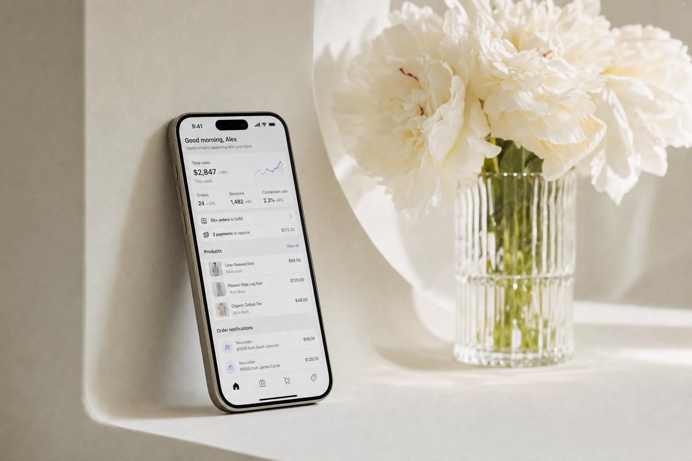
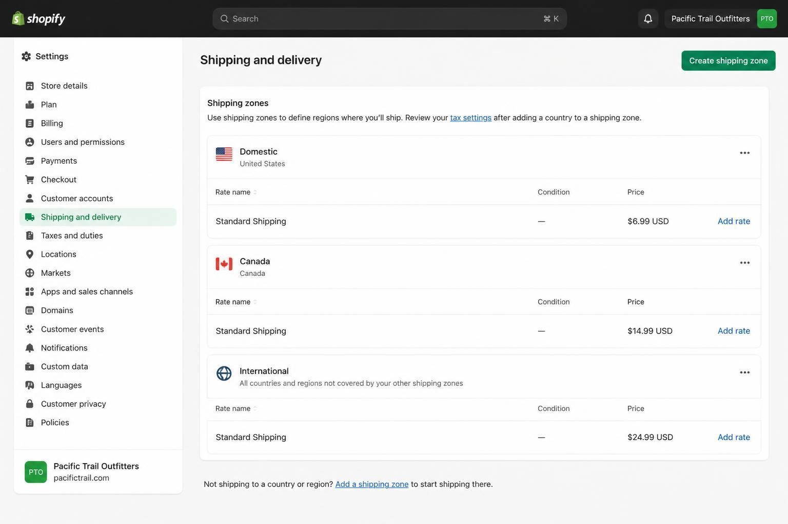
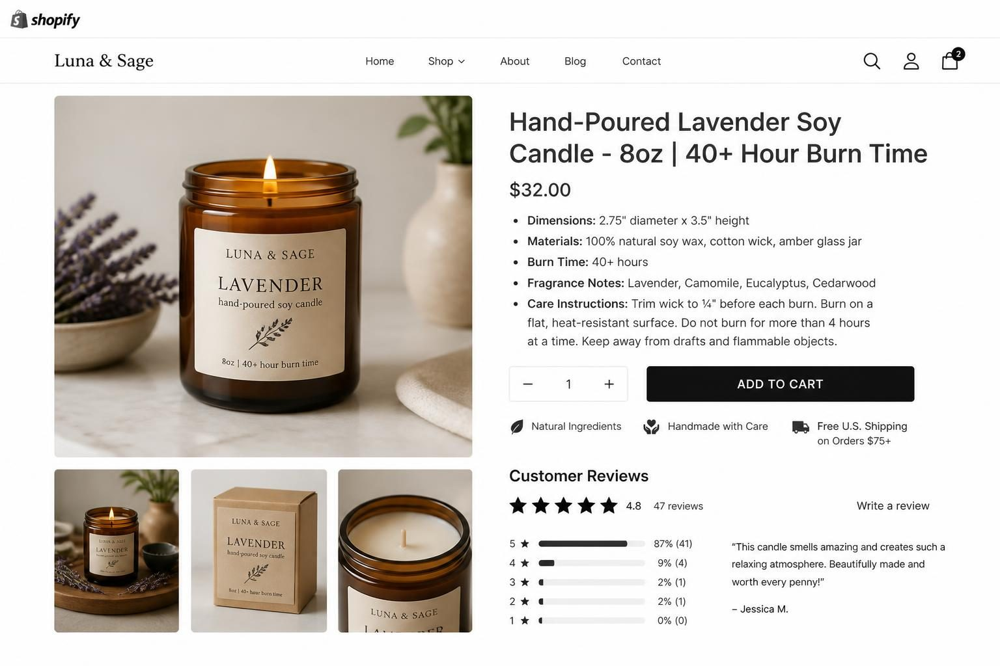
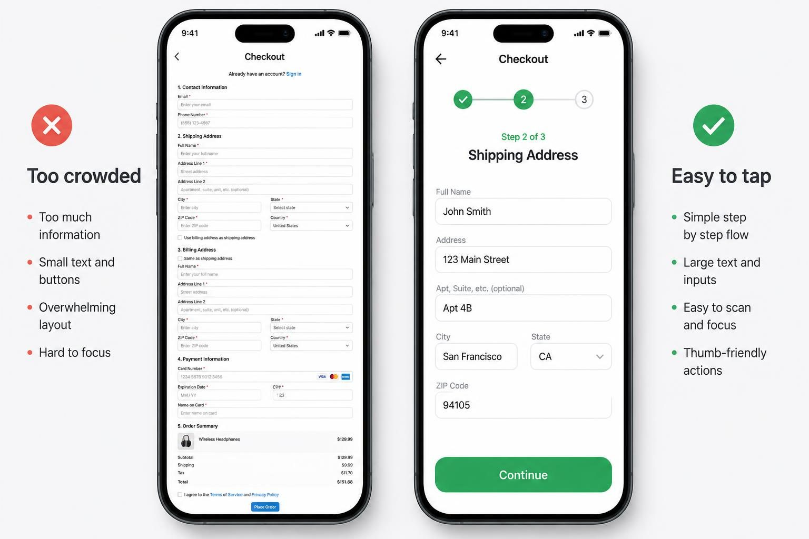

HOW TO START AN ONLINE STORE THAT ACTUALLY MAKES SALES IN 2026

Starting an online store in 2026 means choosing a platform that matches your product type and order volume, setting up shipping so you don't lose money on every sale, and launching with product pages that convert - not just exist. That sequence matters more than picking the perfect logo or spending three weeks on your About page.
Most new store owners get stuck in the wrong order. They obsess over branding before they have products listed. They compare platforms for weeks without understanding that the real cost isn't the monthly fee - it's the transaction fees, the apps you'll need to bolt on, and the shipping math that determines whether you actually profit.
Here's what I see constantly: someone launches with beautiful product photos and a clean theme, then wonders why they're getting traffic but no sales. The problem is almost never the design. It's that their product pages don't answer objections, their shipping costs surprise customers at checkout, or their checkout flow has unnecessary steps that bleed mobile conversions.
The good news is that starting an online store today is genuinely simpler than it was even two years ago. Platform templates have gotten better. Payment processing is nearly instant. You can be live and selling in under a week if you follow the right sequence. The bad news is that "easy to start" doesn't mean "easy to profit from" - and that gap is where most new store owners struggle.
This post walks you through exactly what to do, in what order, with the specific numbers and decisions that actually matter.
THE PLATFORM DECISION THAT DETERMINES YOUR PROFIT MARGINS
The platform you choose affects your bottom line more than almost any other decision - and not in the way most comparison articles explain.
Everyone talks about the monthly fee. Shopify Basic is $39/month. Square Online has a free plan. WooCommerce is "free" (it's not, but we'll get there). What most guides skip is the transaction fee math that compounds with every sale.
Let me show you what this looks like with a real product. Say you sell handmade candles at $32 each.
On Shopify with Shopify Payments: you pay 2.9% + $0.30 per transaction. That's $1.23 per candle sold. If you sell 200 candles a month, you're paying $246 in transaction fees plus your $39 monthly fee. Total platform cost: $285/month.
On Square Online (free plan): you pay 2.9% + $0.30 per transaction - same as Shopify. But no monthly fee. 200 candles = $246/month total. You save $39, but you lose features like abandoned cart recovery and advanced shipping options that might cost you more in lost sales than the monthly fee saves.
On Amazon: you pay $39.99/month plus referral fees of 8-15% depending on category. Home & Kitchen is 15%. On a $32 candle, that's $4.80 per sale. 200 candles = $960 in referral fees plus the monthly fee. Total: ~$1,000/month. You get access to Amazon's traffic, but your margins just got crushed.
The platform that looks cheapest upfront often isn't the cheapest when you run the real numbers for your specific product and volume.
WooCommerce deserves special attention because it's marketed as "free" but rarely is. The plugin itself costs nothing. But you need hosting ($15-40/month for something reliable), security certificates (often included in hosting, sometimes not), and extensions for features that come standard on other platforms. A payment gateway plugin, a shipping calculator, a review system, email integration, backup solution - by the time you have a functional store, you're often at $150-200/month in total costs. Plus you're responsible for updates, security patches, and fixing things when they break.
Who is WooCommerce actually good for?
People who already have a WordPress site with traffic. Developers who want complete control. Store owners with very specific needs that out-of-the-box platforms can't handle. If that's not you, the "free" label is misleading.
Here's my recommendation based on what I've seen work:
Selling 0-50 orders/month and just starting: Square Online's free plan. You can upgrade later. Don't pay monthly fees before you have consistent sales.
Selling 50-500 orders/month with growth ambition: Shopify Basic. The abandoned cart emails alone often pay for the monthly fee. The app ecosystem means you can add features as you need them.
Already selling in person and want online too: Square Online, because the POS integration is seamless. You won't have inventory nightmares.
Selling high-volume commodity products: Consider Amazon as a sales channel (not your only channel), but build your own store too. You need a platform you control.
SHIPPING MATH: WHERE NEW STORE OWNERS LOSE MONEY WITHOUT REALIZING IT
Free shipping isn't free. You're paying for it - the question is whether you've priced it into your products correctly.
Most new store owners either:
1. Offer free shipping without adjusting prices, eating their margins
2. Calculate shipping at checkout, causing cart abandonment when customers see unexpected costs
3. Use a flat rate that's too high for nearby customers and too low for distant ones
None of these work well long-term. Here's how to think about shipping strategically.
First, know your product's dimensional weight.
Carriers don't just charge by actual weight - they charge by dimensional weight if your package takes up more space than its weight suggests. The formula: Length × Width × Height ÷ 139 (for USPS) or ÷ 166 (for UPS/FedEx). Whichever is higher - actual or dimensional - is what you pay for.
A pillow weighs 1 lb but ships in a 20×20×6 box. Dimensional weight: 2400÷139 = 17.3 lbs. You're paying for 17 lbs of shipping on a 1 lb product. If you didn't account for this, you're losing money on every pillow you sell.
Second, understand zone-based pricing.
Shipping from Texas to Maine costs more than shipping from Texas to Oklahoma. USPS, UPS, and FedEx all use zones - the further the package travels, the higher the cost.
For a 2 lb package:
- Zone 1-2 (local): ~$5-7
- Zone 5 (across several states): ~$9-11
- Zone 8 (coast to coast): ~$12-16
If you offer a flat $5 shipping rate, you're profitable on local orders and losing money on distant ones. Over time, this averages out somewhat - but if most of your customers happen to be far from you, you're in trouble.
Third, decide on your shipping strategy before you set prices.
Option A: Free shipping built into prices. Price your products to include average shipping cost. A $25 candle becomes $32. You absorb some variance, but customers see no surprise at checkout. This reduces cart abandonment significantly.
Option B: Real-time calculated rates. Customers see exact shipping costs based on their location. More accurate for you, but sticker shock causes abandonment - especially if they were expecting free shipping because your competitors offer it.
Option C: Flat rate shipping. You charge everyone $6.99 (or whatever number covers most scenarios). Simple for customers, reasonably predictable for you. Works best when your products are similar sizes/weights.
Option D: Free shipping threshold. "Free shipping on orders over $50." Encourages larger orders, protects margins on smaller ones. This is what most successful small stores eventually adopt.

Real example: How a jewelry seller structures shipping profitably
Sarah makes resin earrings. Each pair weighs under 2 oz and ships in a small padded mailer. Her shipping cost is consistent: $4.50 via USPS First Class anywhere in the US.
She prices her earrings at $28-35. Instead of charging separate shipping, she builds $5 into every price (covers the $4.50 plus packaging materials). She advertises "free shipping" and her conversion rate increased 23% compared to when she charged $4.99 shipping at checkout.
Her competitor sells similar earrings for $24 + $4.99 shipping. Same total price, but Sarah's "free shipping" positioning wins more sales because customers perceive it as better value.
PRODUCT PAGES THAT CONVERT (NOT JUST EXIST)
Your product page is where sales happen or don't. Most new store owners drastically underinvest here.
Average e-commerce conversion rate: 1-3%. That means 97-99 out of 100 visitors leave without buying. The difference between a weak product page and a strong one can double or triple your conversion rate - which is the difference between a struggling store and a profitable one.
Here's what a high-converting product page includes:
Title that explains what it is and who it's for
Bad: "Lavender Candle"
Better: "Hand-Poured Lavender Soy Candle - 8oz"
Best: "Hand-Poured Lavender Soy Candle - 8oz | 40+ Hour Burn Time"
Include the key attribute that matters to your buyer. Size, burn time, material, use case - whatever differentiates your product from generic alternatives.
Images that answer questions
Most stores have 2-3 product photos. Top converters have 5-6, each serving a purpose:
1. Main product shot (clean, well-lit, on white or neutral background)
2. Lifestyle/context shot (candle on a nightstand, jewelry being worn)
3. Scale reference (product held in hand, or next to common object)
4. Detail/texture shot (close-up of wick, clasp, stitching)
5. Packaging shot (especially important for gifts)
6. Variations shown together (if multiple colors/scents)
Phone photos in natural light work fine. You don't need a professional studio. But you do need images that answer the questions customers are silently asking: "How big is it really? What does it look like in a real room? What will the packaging look like when it arrives?"
Description that handles objections
Most product descriptions list features. Better descriptions address the objections running through your customer's mind:
- "Is this worth the price?" → Explain materials, process, or durability
- "Will it work for my situation?" → Specific use cases and dimensions
- "What if it doesn't work out?" → Return policy mentioned early
- "When will I get it?" → Shipping timeline in the description, not just at checkout
Format your description for scanners, not readers. Most people don't read product descriptions - they scan. Use bullet points for key specs. Bold the most important details. Break up text with headers. A wall of text loses people immediately.
The 3-5 bullets that close sales
After your paragraph description, include 3-5 bullet points covering:
- Exact dimensions/weight
- Material composition
- Care instructions or usage notes
- What's included (especially for bundles or kits)
- Shipping/processing time
This information reduces hesitation. When someone has to hunt for the size or material, they often just leave instead.

THE LEGAL SETUP THAT ACTUALLY MATTERS (AND WHAT YOU CAN SKIP)
Every guide includes "set up your business legally" but most make it sound more complicated than it is. Here's the actual minimum you need before your first sale:
Business registration
You have two realistic options:
Sole proprietorship: Simplest. You don't register anything - you ARE the business. Income goes on your personal taxes. Downside: no liability protection. If someone sues your business, your personal assets are at risk.
LLC (Limited Liability Company): Creates separation between you and the business. Your personal assets are protected if the business gets sued. Costs $50-500 depending on your state. Takes 15-30 minutes to file online through your state's Secretary of State website. Annual renewal fees vary by state ($0 in some, $800 in California).
Most small product-based businesses start as sole proprietorships and form LLCs once they're making consistent money. There's no wrong answer - just don't let this decision stop you from starting.
EIN (Employer Identification Number)
Get this regardless of your business structure. It's free, takes 10 minutes on IRS.gov, and you receive it immediately. You'll need it to:
- Open a business bank account
- File taxes
- Work with wholesale suppliers (most require it)
- Look more legitimate to payment processors
Sales tax permit
If you sell physical products, you'll collect sales tax from customers in states where you have "nexus" (presence). For most new sellers, that's just your home state initially.
Apply for a sales tax permit through your state's revenue department. Usually free. This authorizes you to collect tax - which you then remit to the state monthly, quarterly, or annually depending on your volume.
The good news: Shopify, Square, and most modern platforms calculate and collect sales tax automatically once you enter your permit info. You just need to remember to actually file and pay what you've collected.
What you can skip (for now)
- Business license: Required in some cities/counties, not required in many. Check your local requirements, but this isn't urgent for online-only stores
- Trademark: Only necessary if you're worried about someone copying your brand name. Costs $250-350 per class. Most small stores don't need this at launch
- Business insurance: Good to have eventually, but not required to start selling
- Reseller's certificate: Only needed if you're buying from wholesalers who require proof you're reselling (to avoid paying sales tax on wholesale purchases)
YOUR PAYMENT PROCESSING REALITY (INCLUDING THE PARTS NOBODY MENTIONS)
Setting up payments takes about 15 minutes. Understanding how payment processing actually works - including held funds and chargebacks - matters more.
The held funds problem
New stores using Stripe, PayPal, or most payment processors will have 20-30% of their funds held in reserve for 90+ days. This isn't punitive - processors are protecting themselves against chargebacks from unestablished businesses.
What this means practically: You make $1,000 in sales your first month. You can only access $700-800 of it immediately. The rest is held. Shopify Payments is more lenient but still holds funds on orders flagged as risky.
Plan your cash flow accordingly. You cannot spend money you've technically earned but can't access. If you're buying inventory or supplies with sales revenue, account for this delay.
Transaction fees across platforms
- Shopify Payments: 2.9% + $0.30 per transaction (Basic plan)
- PayPal: 2.99% + $0.49 per transaction (standard)
- Stripe: 2.9% + $0.30 per transaction
- Square: 2.9% + $0.30 per transaction (online)
If you use Shopify but want PayPal as a payment option, you pay PayPal's fees PLUS Shopify's additional transaction fee (2% on Basic) unless you also enable Shopify Payments. Having multiple payment options increases conversion but costs more per transaction.
Chargebacks will happen
A chargeback is when a customer disputes a charge with their bank. The bank takes the money back from you (plus a $15-25 fee) while investigating. Even if you win the dispute, you've lost time and dealt with hassle.
Reduce chargebacks by:
- Shipping with tracking on every order (proof of delivery)
- Using clear billing descriptors (customers see "YOURSTORE.COM" not "STRIPE PAYMENT XYZ")
- Making your return policy easy to find and use (people chargeback when they can't figure out returns)
- Responding to customer complaints quickly (before they escalate to bank disputes)
Budget for chargebacks. Even well-run stores see 0.5-1% chargeback rates. On $10,000/month in sales, that's $50-100 in lost revenue plus fees.
YOUR TECH STACK'S HIDDEN COSTS (THE REAL MONTHLY NUMBER)
Competitors list "choose a platform" without explaining that a functional store requires more than just the platform.
Here's what a realistic tech stack costs for a functioning small store:
Platform: $0-79/month
- Square Online Free: $0
- Shopify Basic: $39
- Shopify: $105 (if you need gift cards, professional reports)
Email marketing: $0-50/month
- Kit (formerly ConvertKit) Free: $0 up to 1,000 subscribers
- Klaviyo: Free up to 250 contacts, then $20-45+
- Mailchimp: Free up to 500 contacts, then $13+
Reviews app: $0-25/month
- Judge.me Free: $0 (limited features)
- Loox: $9.99+
- Stamped.io: $23+
Shipping label software: $0-20/month
- Shopify Shipping: Included
- Pirate Ship: Free (just pay postage)
- ShipStation: $9.99+
Accounting integration: $0-50/month
- Wave: Free
- QuickBooks Simple Start: $15
- QuickBooks Plus: $45
Backup/security: $0-10/month
- Rewind Backups: $3+/month
- Often included in hosting for WooCommerce
Realistic monthly tech cost:
- Minimum functional store: $50-80/month
- Comfortable feature set: $100-150/month
- Full-featured with all integrations: $200-300/month
A "free" WooCommerce store with necessary plugins, quality hosting, and standard tools easily reaches $150-200/month. The "free" label applies only to the core software.
What you actually need at launch:
1. Platform (obviously)
2. Email capture (even a simple pop-up collecting emails for a future list)
3. Shipping solution (Shopify Shipping or Pirate Ship are fine starting points)
4. Basic analytics (Google Analytics 4 - free)
Everything else can wait. Don't buy 10 apps before you've made 10 sales.
MOBILE OPTIMIZATION ISN'T A PHASE - IT'S WHERE YOUR CUSTOMERS SHOP
Over 60% of e-commerce traffic comes from mobile devices. If your store doesn't work perfectly on a phone screen, you're losing the majority of potential sales.
"Mobile-friendly" isn't just "it loads on my phone." It means:
Buttons are thumb-sized
Add to cart buttons, menu items, checkout buttons - all need to be easily tappable without zooming. A desktop button that looks perfect might be impossible to tap on mobile.
Images load fast
Mobile users are often on slower connections. Large, uncompressed images make your store feel sluggish. Compress product photos below 200KB each. Most platforms do this automatically, but check your upload sizes.
Checkout has minimal steps
Every additional screen or field in mobile checkout loses customers. The best mobile checkouts: cart → shipping info → payment → confirmation. Four screens maximum.
Text is readable without pinching
Body text should be minimum 16px. Headlines should be clear at a glance. If customers have to zoom to read your product description, they won't.
How to actually test this:
Before launching, go through your entire purchase flow on your actual phone. Not your laptop's mobile preview mode - your real phone, on mobile data (not wifi, which is faster).
Add a product to cart. Go through checkout. Note every moment where you hesitate, squint, or have to tap twice. Those friction points are costing you sales.

If you want a store that's already optimized for mobile without spending weeks tweaking settings, premade Shopify themes built specifically for e-commerce can save significant setup time. Jane designs Shopify themes for product sellers who want professional stores without building from scratch - worth considering if you'd rather start selling than debugging responsive breakpoints.
THE STEP-BY-STEP LAUNCH SEQUENCE (WEEK BY WEEK)
Here's the exact order to set up your store efficiently, based on what actually needs to happen before other things can work:
Week 1: Foundation
Days 1-2: Product and pricing decisions
- List every product you're launching with (aim for 10-30 SKUs minimum)
- For each product: calculate cost of goods + packaging cost + estimated shipping cost
- Set prices using this formula: (total cost) ÷ 0.5 = minimum price (for 50% margins)
- Decide: free shipping built into prices OR calculated at checkout
Days 3-4: Legal setup
- Register LLC or file DBA if using business name ($50-500)
- Get EIN from IRS.gov (free, instant)
- Apply for state sales tax permit (free, 1-2 weeks to receive)
Day 5: Domain name
- Check availability on Namecheap or Google Domains
- Purchase exact match to your business name if possible ($12-15/year)
- Grab common misspellings if budget allows
Week 2: Platform setup
Days 1-2: Platform configuration
- Sign up for chosen platform (Shopify Basic trial, Square Online Free, etc.)
- Connect domain to platform
- Set up payment processing (Shopify Payments, Stripe, or PayPal)
- Enter tax information for automatic collection
Days 3-4: Shipping configuration
- Enter product weights and dimensions
- Set up shipping zones (start with domestic only if simpler)
- Configure rates: flat rate, calculated, or free with threshold
- Test a dummy checkout to confirm rates look correct
Day 5: Email setup
- Connect email marketing platform (Klaviyo, Kit, or Mailchimp)
- Create simple welcome email for new subscribers
- Add email capture pop-up to site (offer 10% off first order)
Week 3: Build your store
Days 1-3: Product pages
- Upload all product photos (4-6 per product minimum)
- Write titles with key attributes
- Write descriptions that handle objections
- Add 3-5 bullet points with specs
- Set prices, inventory counts, variants
Days 4-5: Navigation and collections
- Create collections/categories that make sense for your products
- Set up main navigation (keep it simple: Shop, About, Contact)
- Create About page (brief, genuine, includes a photo of you if comfortable)
- Create Contact page with actual email or contact form
- Create FAQ page covering shipping times, returns, sizing
Week 4: Legal pages and launch
Days 1-2: Required pages
- Add Privacy Policy (Shopify generates this, or use free generator)
- Add Terms of Service (same - platform often generates)
- Add Shipping Policy page (be specific about processing time and carriers)
- Add Return Policy page (clear timeframes and process)
Days 3-4: Final testing
- Complete full checkout on mobile (use real phone, mobile data)
- Complete full checkout on desktop
- Verify confirmation emails send and look correct
- Check all links work
- Have a friend attempt to purchase and give feedback
Day 5: Launch
- Announce to your email list (even if it's tiny)
- Post on personal social media
- Send to friends and family who said they'd support
- Officially open for business
COMMON MISTAKES THAT COST NEW STORE OWNERS SALES
After seeing hundreds of new stores launch, these are the errors I see most frequently:
Mistake 1: Waiting for perfection
Your first version will not be perfect. It doesn't need to be. Launch with 15 products, not 50. Launch with phone photos, not professional shots you can't afford yet. Launch with a free theme, not a custom design.
You learn more from 10 real sales than 10 weeks of tweaking your About page.
Mistake 2: Ignoring shipping until checkout
I've watched people build entire stores, list 40 products, design beautiful pages - then realize they never figured out shipping. Now they're rushing to calculate rates, pick carriers, and set up zones while customers are trying to check out.
Do shipping setup early. It affects your pricing, your margins, and your customer experience.
Mistake 3: Not capturing emails from day one
Your first visitors probably won't buy. That's normal. But if you're not capturing their email addresses, you're losing them forever.
Simple pop-up: "Get 10% off your first order" in exchange for email. Now you can market to them again. Without email capture, you're paying (in time or money) to acquire each visitor once - and never seeing most of them again.
Mistake 4: Setting prices without knowing true costs
"I'll charge $30 because that feels right for a candle."
Then you realize packaging is $1.50, shipping is $5, platform fees are $1, you spent $8 on materials, and your $30 candle makes you $14.50. That sounds okay until you factor in time, marketing costs, and returns.
Know your numbers before you set prices. Then add margin buffer for unexpected costs.
Mistake 5: Buying apps before making sales
It's tempting to install every review app, upsell app, and marketing tool. But you don't know what you actually need until you have real customers revealing real friction points.
Start with the bare minimum. Add tools only when you have specific problems they solve.
FREQUENTLY ASKED QUESTIONS
How much does it cost to start an online store?
The realistic minimum is $50-100 to get live: domain ($12-15), platform (free trial to start, then $39+ on Shopify), and basic supplies for your first few orders. A comfortable starting budget is $300-500, which covers your first two months of platform fees, initial inventory/supplies, and packaging materials. Budget an additional $100-200/month for ongoing costs once you add email marketing, apps, and shipping label services.
Is starting an online store profitable?
It can be, but profitability depends entirely on your margins and volume. A product with 50% margins needs roughly $3,000-5,000 in monthly sales to cover platform costs, transaction fees, and your time investment with money left over. Some stores are profitable from month one with low overhead and high margins. Others take 6-12 months to break even if they're building audience from scratch or operating on thin margins. The math is straightforward - run actual numbers for your specific products before assuming profit.
Can I create an online store for free?
You can start for free using Square Online's free plan or similar platforms, but "free" has limits. Free plans typically restrict features (no abandoned cart emails, limited product options), display platform branding, and charge higher transaction fees. You also still need a domain ($12-15/year) if you want to look professional. It's possible to launch and make sales on free plans, but most serious stores outgrow them within a few months. Consider free plans as extended trials, not permanent solutions.
What is the best platform for beginners starting from nothing?
For most beginners selling physical products, Shopify Basic or Square Online are the safest starting points. Shopify has more features and a larger app ecosystem but costs $39/month. Square is free to start and excellent if you also sell in person. WooCommerce is only "best" if you're already comfortable with WordPress and want maximum control. Don't overthink this - you can migrate platforms later. Pick one, start selling, and learn what you actually need from real experience rather than hypothetical research.
How do I get my first customers?
Your first 10-20 sales typically come from people who already know you: friends, family, social media followers, email contacts. Post about your launch on personal accounts. Email everyone you know. Ask people to share with someone who might be interested. After that, sustainable traffic comes from Pinterest SEO for long-term traffic, Instagram for brand building, or paid ads if you have budget for testing. Most stores see meaningful organic traffic 3-6 months in, not immediately at launch.
How long does it take to set up an online store?
Most people can launch a functional store in 5-7 days following a focused process. This assumes you already know what you're selling and have products ready. The breakdown: 1-2 days for legal setup and domain, 2-3 days for platform configuration and shipping, 2 days for product listings and testing. Stores take longer when owners get distracted by theme customization, app shopping, or waiting for "perfect" product photos. Done is better than perfect - launch, then improve based on real customer feedback.
STARTING AN ONLINE STORE WHEN YOU'RE NOT TECHNICAL
The technical barrier to starting an online store in 2026 is genuinely lower than it's ever been. Platforms handle the complicated stuff: payment security, mobile responsiveness, tax calculation, shipping integrations.
But the fundamentals still require your attention. Know your costs before setting prices. Understand your shipping math before customers get surprised at checkout. Build product pages that answer objections, not just display features. Capture emails from day one so you're not starting from zero every time you want to make a sale.
The stores that succeed aren't necessarily the prettiest or the most technically sophisticated. They're the ones where someone understood the basic economics, launched before they felt ready, and improved based on what real customers actually needed.
Your first version will be imperfect. That's fine. Make your 10th sale before you worry about your 1,000th. Start with the minimum viable setup, prove you can sell something, then invest in the tools and polish that actual revenue can support.
If you're selling physical products and want to skip the technical setup entirely, a proper Shopify store setup guide walks through every setting in detail. Or if you're still deciding between platforms, comparing Shopify vs Wix for e-commerce helps clarify which fits your product type.
The hardest part isn't the technology. It's starting. Pick a platform, list your products, and make your first sale this week. Everything else can be figured out once you have real customers telling you what they need.
Ready to stop researching and actually launch? Check out the [business template bundles](https://www.switzertemplates.com/business-template-bundles?utm_source=blog&utm_medium=content&utm_campaign=how-to-start-an-online-store) that include everything to get your online presence set up - branding, website, and marketing templates in one package so you can focus on selling instead of designing from scratch.
Let me know in the comments below if you want me to cover any branding or marketing topics in more depth, and I'll make sure to create a blog post about it in the future.